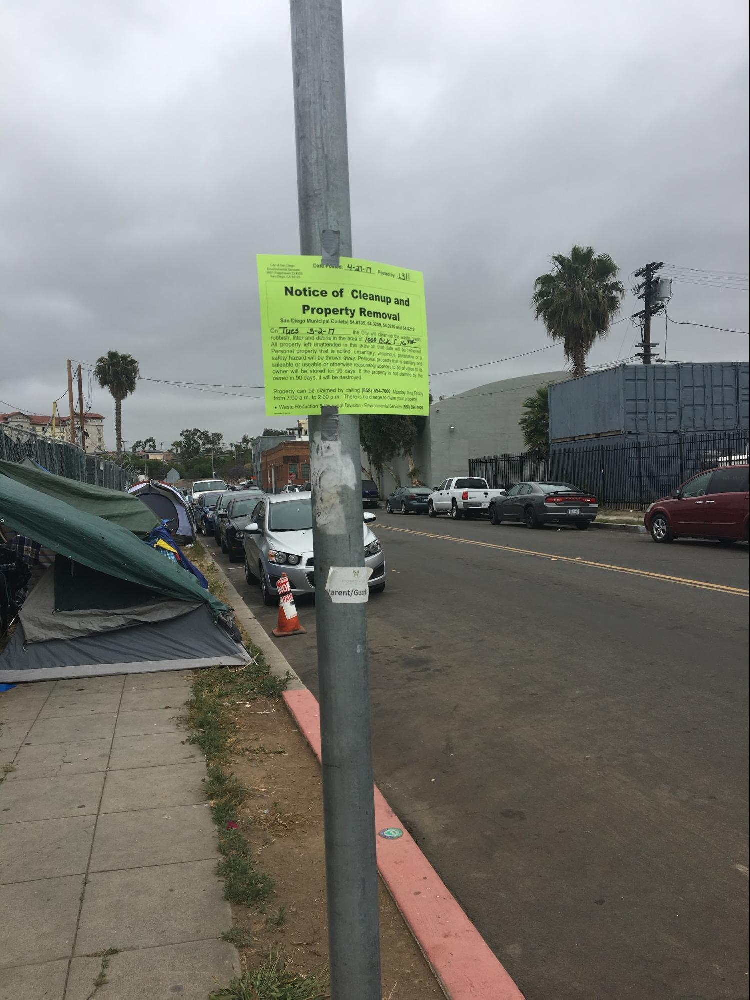
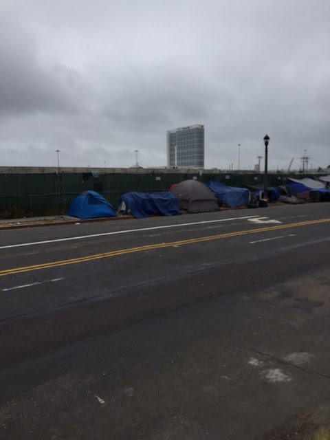
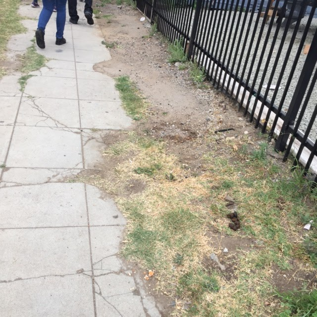
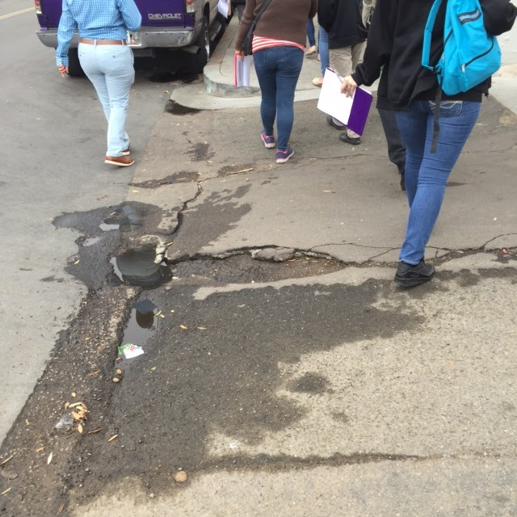

Summary: Due to a long history filled with systematic injustices to populations of color, especially those of lower socioeconomic status, communities in Barrio Logan are faced with more barriers to adequate access to healthcare education and family planning services. This is a major catalyst for vast disparities in health outcomes and access within these communities, especially among young womxn of color. Being able to guide, teach, and empower youths in these communities to learn more about their health, the resources available them such as clinics, mentor programs, and Expectant Teen Classroom programs is a vital way to increase reproductive health awareness and accessibility within their community and help foster a healthier future for Latinx youth in Barrio Logan.

One gloomy morning in Barrio Logan, we stumble upon a group of individuals holding “Walkability Audit” papers and speaking in frustrated tones. After watching them gesture towards cigarette butts on the ground and the tents on either side of the road, it wasn’t too hard to guess what they were speaking so heatedly about.
San Diego has received the notoriety of ranking 4th in the nation’s list of cities with the highest homeless populations. Barrio Logan, the well-known ethnic enclave off of the I-5, has borne the brunt homelessness for the better part of the past decade. The continuing development of the neighboring downtown area has pushed many of the homeless population out of their old haunts in East Village and into the barrio. The line of tents have become a standard feature of the neighborhood, a persistent reminder of a problem that has yet to be solved.
A Barrio Logan resident notes the prevalence of homelessness in his neighborhood, and addresses the ongoing stigma that many in the public have against those that live on the streets.
And yet, many community-based efforts in Barrio Logan have risen up to help the homeless population. perhaps one of the most well-known names associated with alleviating the obstacles of homelessness is Monarch school. Monarch school is one of four schools in the nation that serve homeless or at-risk youths. Considering there is a staggering number of children who fit the category (the San Diego County of Education has tallied about 22,784 in the county just this past year), the Monarch School is a valuable service. It’s in front of Monarch where we first meet the group of parents conducting the Walkability audit.
Ironically, Monarch’s ability to support vulnerable youth is being obstructed--quite literally--by an overcrowded mess of tents. The nearby walkways have become one of the latest in a number of new “homes” for the local homeless population. Because of this, students arriving to school are forced to take to the dangerous roads with their littered and cracked crosswalks, inadequate pedestrian signage, and tight turns.
“Watch out,” says one of the women as she points to what seems like the tenth pile of feces we’ve seen in ten minutes.
As we carefully step around the pile, I ask another member of the group why this audit is important to them. Many of these students use public transportation, she responds. This means that they need to make the trip from the trolley stop or the bus stop a few blocks away, careful to avoid all of the hazards in their path. On any given day and at any given time (not counting “cleanup days” when the homeless know to evade the area), the students could encounter unsanitary items haphazardly thrown around the street, and they could even be subjected to unwanted attention from strangers living in the tents. Moreover, many make their way to the school in the early morning when the insufficient light makes it easy to fall over anything in their path, from scattered litter to cracks in the sidewalks. The only alternative to avoid the sidewalks then is to take to the road, which is fraught with its own dangers. A tight turn at the end of the street is a frequent passageway for big trucks, which even if a “school” sign and a yield sign were to be installed, the danger of the area is still evident.
A glimpse at the immediate area surrounding Monarch school on a regular day mid-morning
These community members are concerned and are taking action to improve the conditions. Parents/guardians of students at Monarch have conducted a Walkability Audit of the school’s surrounding area to assess its safety. Having evaluated the turns, seen the walkway congestion, and wondered at the lack of proper traffic signage, these individuals have a sense of what needs to be changed to help ensure the safety of the students at Monarch. They plan on drafting a Community Plan of Action that will detail the positive changes they would like to make, how they would like to implement it, and what the city can do to help.
The problem is that even a well-educated individual could find it difficult to affect change at the government level, and many of these community members - having once been a part of the homeless population themselves - have very little formal education or exposure to political engagement and community organizing. Despite this, they are determined to find a way to recruit governmental support. It’s the only way they believe they’ll be able to establish the crosswalk or school zone that they need in order to make the area a safer place.
Attending classes and taking exams can be difficult enough for most, but having to travel far distances, depend on public transportation, and navigate ways through unnecessary dangers to simply get to school may make it nearly impossible. For many of these students, they must do all of this while also worrying about where they will sleep that night or whether they will have enough to eat. Receiving an education can simply stop being a priority. The community members are aware of this and they are willing to put in time and effort into creating a safer route to school so that these students’ path towards education is no more burdened than it already is.
They’re not sure how they’ll be able to muddle through the guidelines and requirements necessary to even create a legitimate Community Action Plan, but they’re sure that they must do something. Because these kids are going through enough.
What are we doing about it and how can YOU get involved?
Helping community members with mobilizing for change/being active citizens by helping them draft a Community Action Plan
What is the community doing about it and how can YOU get involved?
The Monarch school is doing the best it can for its students and is in no way responsible for the built environment that surrounds it. Donate to the Monarch School or Volunteer your time here